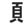

|  | headright |
| TOU |
I hate you from you head down to your TOES. |
|
The average human's head is shaped like a bean, full of thoughts about terror and money. |
| あたま |
head
★★★★★ |
| 頭痛 | |
| 頭が悪い |
mouth-breathing, no-brain idiot
★★☆☆☆
|
| 頭いいね |
Mr. Smart guy! ★★☆☆☆ SARC Means 'You're smart!' . . . or maybe it means 'Well, you're a sly one, aren't you?' (if they say the ね at the end, chances are it's the latter) |
| Meaning | Hint | Radical | |
|---|---|---|---|
| 頭 | head | BEAN | 豆 |
| 顔 | face | HAIR |  |
| 領 | territory | COMMAND | 令 |
| 願 | beseech | HIGH PLAIN | 原 |
Your head looks like a BEAN,
but your face has beard HAIR on it.
I COMMAND my territory,
but you beseech me to keep my army off the HIGH PLAINS.
 KANJIDAMAGE
KANJIDAMAGE
 Number
857
Number
857